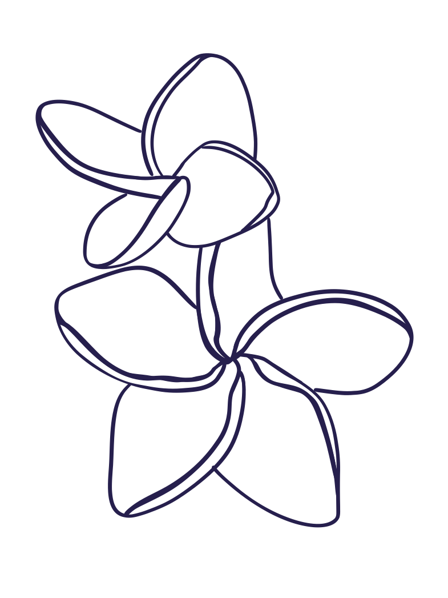
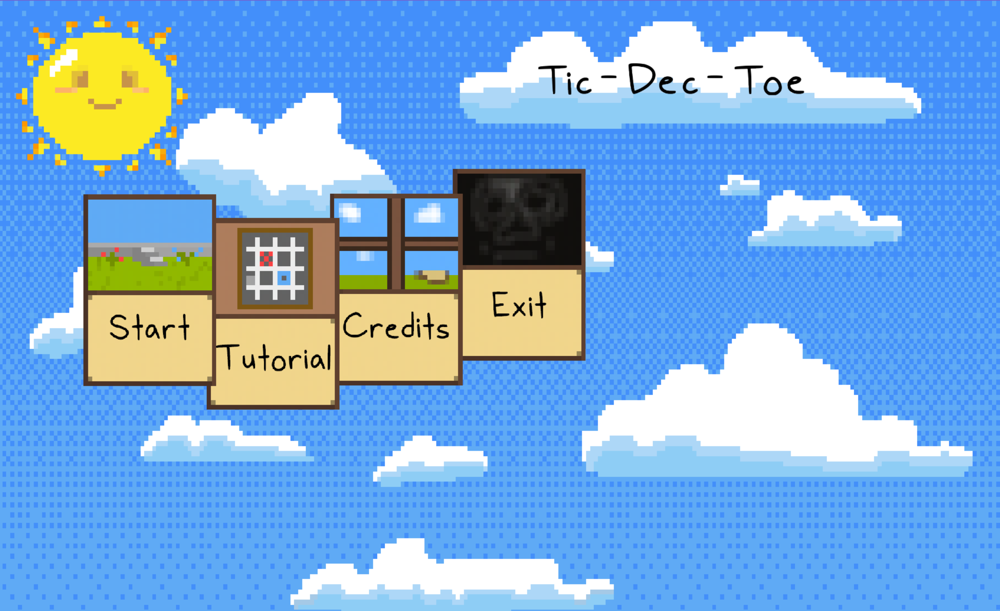

New Character Unlocked:
Game Developer » Technical Designer
Scroll to Start


Tic-Dec-Toe is a strategic twist on traditional tic-tac-toe, featuring a 4x4 grid and cards with unique effects that add new layers of strategy.